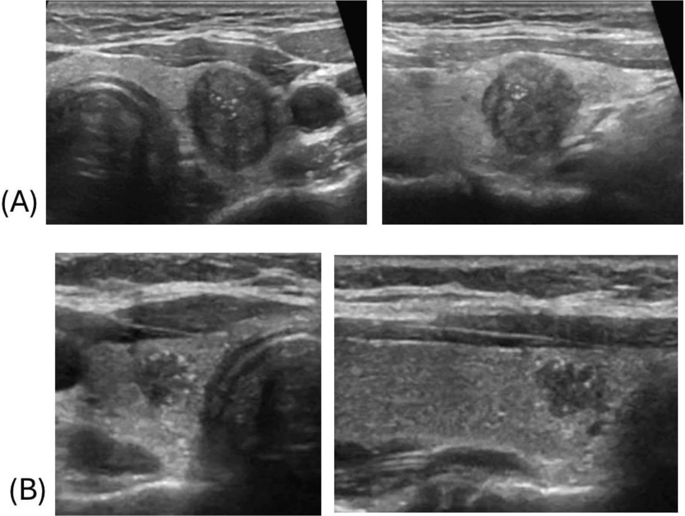
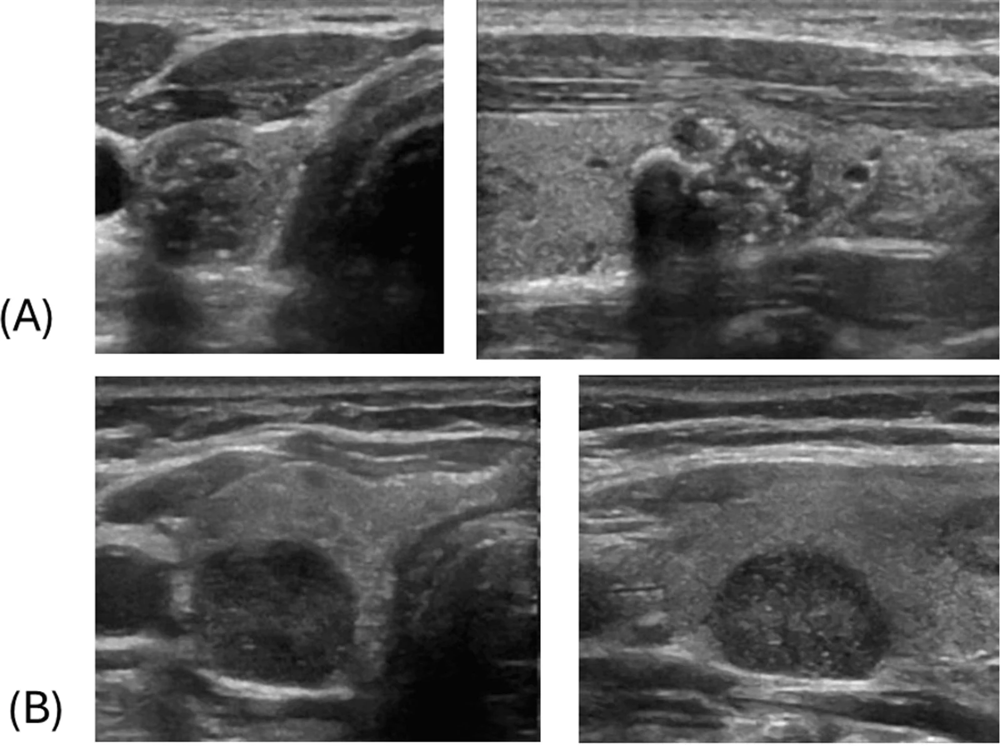

230 — Tuyến giáp ACR TI-RADS & hạch cổ / Thyroid TI-RADS
Tags: pattern:nhan-giap vung:tuyen-giap score:TI-RADS incidentaloma:nhan-giap
Mức chắc chắn (certainty): tổng hợp y văn (literature synthesis) — nhóm tự biên từ y văn mở, chưa gắn ca nguyên văn đơn lẻ.
1. Tổng quan — xơ xuyên mặt phẳng + thể cát vs keo + đen hơn cơ
- Cao hơn rộng (taller-than-wide, Trước-Sau/Ngang > 1): nhân lành (keo, nang) dẹt theo mặt phẳng mô + xẹp khi ấn đầu dò; ung thư nhú (PTC) xơ hóa mô đệm (desmoplasia) xâm lấn xuyên mặt phẳng theo trục trước-sau — TẠI SAO 3 điểm.
- Chấm tăng âm ≤ 1 mm (punctate, 3đ) = thể cát (psammoma) từ hoại tử nhú ung thư, nhỏ hơn bước sóng nên không bóng lưng; đuôi sao chổi > 1 mm (0đ) = đa âm keo cô đặc lành tính.
- Rất giảm âm (3đ) = đen hơn cả cơ trước giáp (strap: ức-giáp, ức-móng) — đặc hiệu > 90%; giảm âm thường (2đ) chỉ đen hơn nhu mô giáp.
2. Mẫu hình + gamut nhân giáp & hạch cổ (Gamut)
- Bọt biển/nang/toàn keo + đuôi sao chổi: TR1 — bỏ qua.
- Đặc + đồng âm + bờ nhẵn + không vôi: TR2–3 — theo dõi/FNA theo mm.
- Đặc + giảm âm + cao-rộng + đa cung + vi vôi: TR5 — FNA + mổ.
- Nhân nhỏ + hạch mất rốn/vi vôi: di căn — FNA hạch + Tg rửa (bỏ ngưỡng mm!).
3. Bảng cộng điểm 5 nhóm + ma trận 4 thực thể
| Nhóm (4 nhóm đầu chọn 1, vôi cộng dồn) | Mức điểm |
|---|---|
| Thành phần: nang 0 / bọt biển 0 (DỪNG, không cộng thêm!) / hỗn hợp 1 / đặc 2 | 0–2 |
| Hồi âm: trống 0 / tăng-đồng 1 / giảm 2 / rất giảm 3 | 0–3 |
| Hình: rộng-cao 0 / cao-rộng 3 | 0 / 3 |
| Bờ: nhẵn/không rõ 0 / đa cung-không đều 2 / xâm lấn 3 | 0–3 |
| Vôi (CỘNG DỒN tất cả): đuôi sao > 1 mm 0 / thô 1 / viền 2 / chấm ≤ 1 mm 3 | 0–6 |
| Thực thể (entity) | Hình ảnh | Chốt vào (rule-in) | Chốt loại (rule-out) | Gợi ý xác nhận |
|---|---|---|---|---|
| PTC (TR5) | Đặc + rất giảm + cao-rộng + đa cung/xâm lấn + vi vôi (≥ 7đ) | ≥ 7đ + mô bệnh (~35% ác) | Bọt biển → TR1 | FNA ≥ 10 mm + mổ |
| Nang thể (TR3) | Đặc + đồng âm + nhẵn + viền dày, 3đ | 3đ + FNA ≥ 25 mm | Vi vôi → TR5 | FNA theo mm |
| Keo lành (TR1) | Bọt biển/nang + đuôi sao > 1 mm | Spongiform = DỪNG | Cao-rộng → TR5 | Bỏ qua |
| Giả nhân Hashimoto | Tăng âm bờ đều + da báo + không khối (White Knight) | Không hiệu ứng khối | Có khối → nhân thật | Cấm FNA |
| Hạch di căn PTC | Tròn (D/N < 2) + mất rốn + vi vôi/nang + mạch vỏ | Tg rửa cao + VI/III–IV | Rốn mỡ + bầu dục → phản ứng | FNA hạch + Tg (bỏ ngưỡng mm!) |

Giảm âm + bờ không đều + chấm tăng âm. Nguồn: Abougazia et al., Cureus 2026 Fig. 4, CC BY 4.0.
Rất giảm âm + vi vôi, PTC xác nhận. Nguồn: Abougazia et al., Fig. 6, CC BY 4.0.4. Protocol + ngưỡng FNA/theo dõi + flowchart
- TR1–2: không FNA/theo dõi. TR3: FNA ≥ 25 mm, theo dõi ≥ 15 mm (1-3-5 năm). TR4: FNA ≥ 15 mm, theo dõi ≥ 10 mm (1-2-3-5 năm). TR5: FNA ≥ 10 mm, theo dõi ≥ 5 mm (hàng năm 5 năm). Tối đa 2 nhân FNA.
flowchart TD
A[Nhân giáp tình cờ] --> B{Cộng 5 nhóm}
B -->|0-2đ| C[TR1-2: bỏ qua]
B -->|3đ| D[TR3: FNA≥25mm]
B -->|4-6đ| E[TR4: FNA≥15mm]
B -->|≥7đ| F[TR5: FNA≥10mm]
F --> G{Hạch mất rốn? FNA hạch + Tg}
5. Cạm bẫy
- Hạch di căn + nhân 5–8 mm chờ đủ 10 mm = trễ — FNA cả hạch (Tg rửa) + nhân ngay.
- TR5 < 10 mm sát rãnh khí-thực quản (dây quặt ngược) — không theo dõi chủ động, FNA/mổ sớm.
- Thực quản cổ trái giả nhân vôi — nuốt nước bọt thấy nhu động là thực quản!
- Bỏ sót hạch VI trung tâm sau mổ giáp — siêu âm VI + Tg máu theo dõi tái phát.
6. Tự lượng giá — Blind Quiz
Ca 1 — Nhân giáp giảm âm bờ không đều + chấm sáng. Chấm điểm.
- Hỏi: cộng mấy điểm? TR mấy? Bước tiếp?
Bấm để hiện đáp án
- Dấu hiệu (findings): đặc (2) + giảm âm (2) + bờ không đều (2) + chấm ≤ 1 mm (3) = 9đ → TR5.
- Chẩn đoán (diagnosis): nghi PTC cao (~35% ác) — FNA + mổ (mô bệnh xác nhận).
- Nguồn: Abougazia et al., Fig. 4, CC BY 4.0.
Ca 2 — Nhân 7 mm TR5 + hạch VI mất rốn + vi vôi: chờ 10 mm không? (Bảng mục 3 + mục 5.)
Bấm để hiện đáp án
- Không chờ: FNA hạch + Tg rửa + FNA nhân ngay (bỏ ngưỡng mm khi hạch di căn!).
Ca 3 — Da báo + tăng âm bờ đều + không khối, TPO (+): nhân thật hay giả nhân? Chọc không? (Bảng mục 3.)
Bấm để hiện đáp án
- Giả nhân Hashimoto (White Knight): cấm FNA — theo dõi giáp.
Bài liên quan chéo
- 200 – Tổng quan Thần kinh
- 235 – Thái dương & xoang (đầu-mặt-cổ)
- [231 – Hạch cổ (dự kiến viết sau)]
- 1622 – Đốt cồn nang giáp lành tính (PEI) (xử lý nang giáp lành tính có triệu chứng)
Không dùng để chẩn đoán độc lập khi chưa có người hướng dẫn.